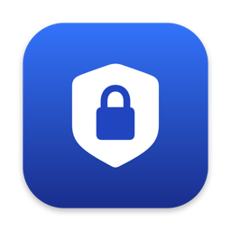

App Network blocker
Block internet access for any app on your Mac.
Support
Have a question or found a problem? Open an issue on GitHub — describe what you did and which macOS version you use.
How do I start blocking?
Open the app, turn on Block Traffic, then add apps with Add from Finder… or Catch Apps….
macOS asks to allow an extension
This is required once. Open System Settings → General → Login Items & Extensions → Network Extensions, turn on the app, and allow the content filter.
A blocked app still has internet
Connections an app opened before it was blocked keep working. Quit the app and open it again.
Does blocking work after a restart?
Yes. Blocking is done by a macOS network filter that starts with the system, even when the app is closed.
How do I unblock an app or remove everything?
Press the minus button next to the app, or turn off Block Traffic. To remove the app completely, move it from Applications to the Trash — macOS removes its extension too.
Поддержка
Есть вопрос или нашли проблему? Создайте обращение на GitHub — опишите, что вы делали, и какая у вас версия macOS.
Как начать блокировку?
Откройте приложение, включите Блокировку трафика и добавьте приложения кнопкой Добавить из Finder… или Поймать приложения….
macOS просит разрешить расширение
Это нужно один раз. Откройте Системные настройки → Основные → Объекты входа и расширения → Сетевые расширения, включите приложение и разрешите фильтр контента.
Заблокированное приложение всё ещё в сети
Соединения, открытые до блокировки, продолжают работать. Закройте приложение и откройте снова.
Работает ли блокировка после перезагрузки?
Да. Блокировку выполняет сетевой фильтр macOS, он запускается вместе с системой, даже когда приложение закрыто.
Как разблокировать или удалить всё?
Нажмите минус рядом с приложением или выключите Блокировку трафика. Чтобы удалить полностью, перенесите приложение из папки «Программы» в Корзину — macOS удалит и расширение.